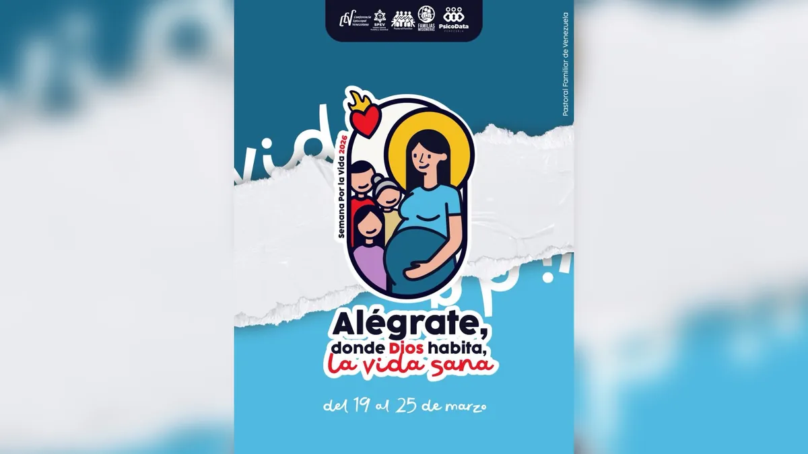
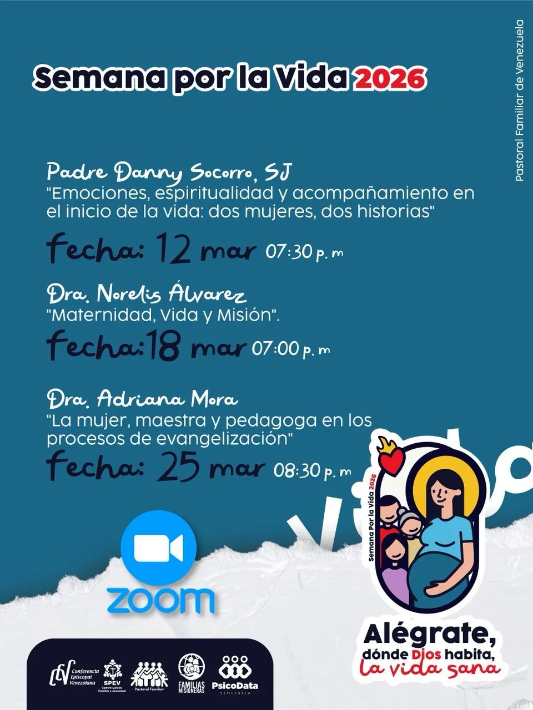
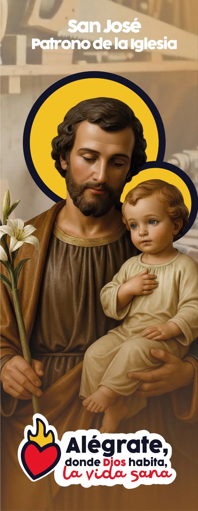
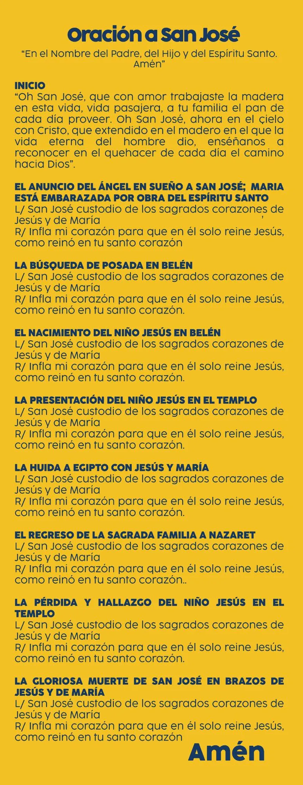
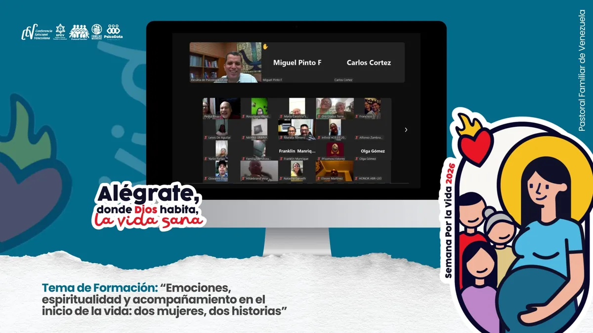
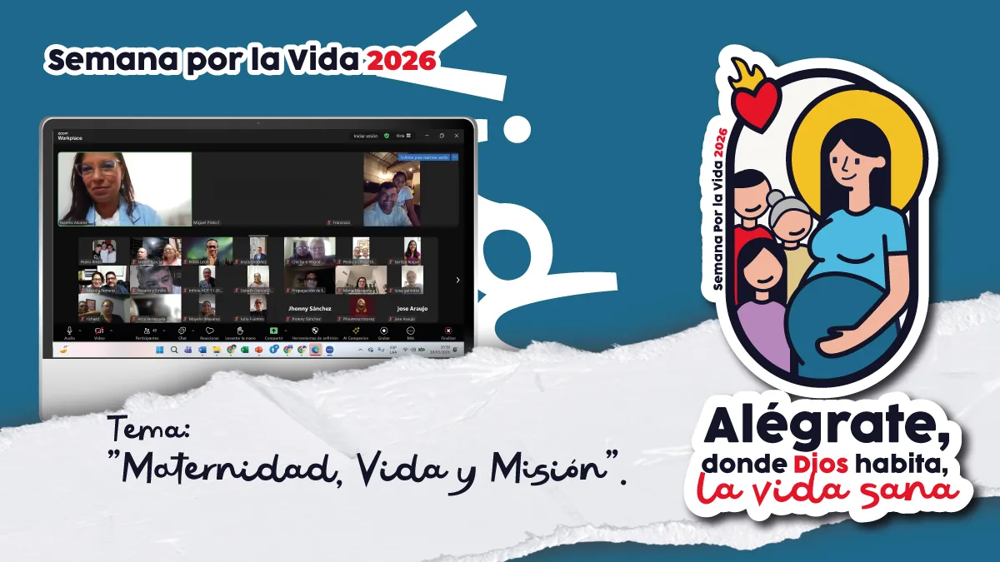

Semana por la Vida 2026
20.ª edición, según la CEV, de la semana de oración y formación en defensa de la vida humana, del 19 al 25 de marzo, con el tema «Alégrate, donde Dios habita, la vida sana».

Datos del evento
- Fecha
- Del 19 al 25 de marzo de 2026
- Modalidad y lugar
- Virtual y presencial · Virtual (Zoom y YouTube) y parroquias de todo el país
- Organiza
- Área de Familia y Vida del Centro de Laicos, Familia y Juventud, del SPEV de la Conferencia Episcopal Venezolana
- Estado
- Realizado
Cómo fue
La Semana se inspiró en el «Sí» de María y buscó defender y valorar la vida humana desde la familia. Empezó el 19 de marzo, día de san José, y cerró el 25, fiesta de la Anunciación. Tuvo tres formaciones virtuales para agentes de pastoral, por Zoom y con transmisión por YouTube.
La primera, el 12 de marzo, llenó la sala de Zoom con alrededor de cien agentes de pastoral. Un sacerdote jesuita habló de emociones, espiritualidad y acompañamiento al inicio de la vida: dos mujeres, dos historias. El 18 de marzo una psicóloga clínica dio la charla «Maternidad, Vida y Misión». La convocatoria anunció para el 25 de marzo una formación sobre el vientre como espacio de salvación.
Para vivir la semana en casa y en la parroquia, el Centro difundió un subsidio con el Rosario por la Vida, una oración a san José y una propuesta de Hora Santa. Según la nota de cierre, en las diócesis hubo bendiciones de vientres, jornadas de oración y caminatas por la vida en las parroquias. El 18 de marzo el Área de Familia estrenó su canal de YouTube, donde quedan las formaciones.
Qué se hizo
- 12 de marzo: «Emociones, espiritualidad y acompañamiento en el inicio de la vida: dos mujeres, dos historias», con un sacerdote jesuita.
- 18 de marzo: «Maternidad, Vida y Misión», con una psicóloga clínica.
- 25 de marzo: «La mujer, maestra y pedagoga en los procesos de evangelización», formación de cierre anunciada por la CEV el 20 de marzo.
- Difundieron un subsidio con Rosario por la Vida, oración a san José y propuesta de Hora Santa.
- Estrenaron el canal de YouTube «Área de Familia» (18 de marzo), donde quedan las formaciones.
Quién participó
- El equipo de coordinación del Área de Familia del Centro.
- Ponentes invitados y agentes de pastoral de arquidiócesis y diócesis.
Cifras
- Alrededor de cien personas en la primera formación, hasta el tope de la sala de Zoom, según la nota de la CEV del 13 de marzo de 2026.
Galería
Semana por la Vida 2026, Virtual (Zoom y YouTube) y parroquias de todo el país, del 19 al 25 de marzo de 2026

Logotipo de la Semana por la Vida 2026: una madre embarazada con su familia y el lema Alégrate, donde Dios habita, la vida sana. Crédito: Centro de Laicos, Familia y Juventud, CEV. 
Afiche «Semana por la Vida 2026, Alégrate, donde Dios habita, la vida sana», del 19 al 25 de marzo. Crédito: CEV Medios, fuente: Centro de Laicos, Familia y Juventud. 
Programa de las tres formaciones virtuales de la Semana por la Vida 2026, con fechas y horas por Zoom. Crédito: CEV Medios, fuente: Centro de Laicos, Familia y Juventud. 
Estampa de san José con el Niño y el logo de la Semana por la Vida 2026. Crédito: CEV Medios, fuente: Centro de Laicos, Familia y Juventud. 
Oración a san José en texto, con formato de tarjeta. Crédito: CEV Medios, fuente: Centro de Laicos, Familia y Juventud. 
Afiche de la primera formación de la Semana por la Vida 2026 sobre emociones y espiritualidad al inicio de la vida. Crédito: CEV Medios, fuente: la nota no indica fuente. 
Afiche de la formación «Maternidad, Vida y Misión» de la Semana por la Vida 2026. Crédito: CEV Medios, fuente: Centro de Laicos, Familia y Juventud.
Fuentes
- Balance oficial: 20 años defendiendo la esperanza y la unidad familiar (nota de la CEV del 27 de marzo de 2026)
- Convocatoria oficial (nota de la CEV del 2 de marzo de 2026)
- Primera formación (nota de la CEV del 13 de marzo de 2026)
- Segunda formación (nota de la CEV del 20 de marzo de 2026)
- Subsidio Semana por la Vida 2026 (PDF, unos 7,9 MB)